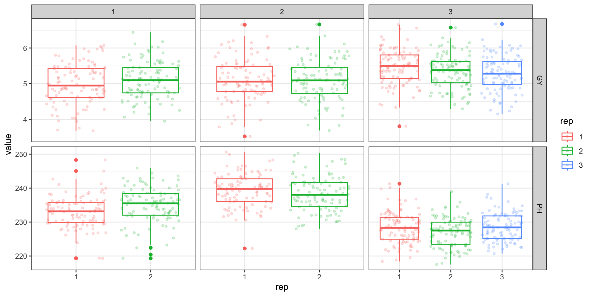

Planejamento experimental
e Análise de dados agronômicos
José Tiago Barroso Chagas
Apresentação

Engenheiro agronômo (UFCA- 2018)
Mestre em genética e melhoramento de plantas (UENF-2020)
Doutor em genética e melhoramento (UFV- 2024)
Pesquisador de pós doutorado (UFV- Atual)
Sumário
- Princípios da experimentação agrícola
- Planejamento de Experimentos agronômicos
- Equações de Modelos Mistos
- Análise de variância individual
- Análise de variância conjunta
- Predição de valores genotípicos
- Análise de Fatores
- Índices de seleção
Princípios da Experimentação agrícola
- Repetição
- Casualização
- Controle local
Planejamento de Experimentos agronômicos
- Experimentos com grande número de tratamentos para os blocos casualizados em DBC
- k Tratamentos divididos em k blocos (ktrat*kblocos)
- Látice quadrado (9trat/k3/rep3)
ID LOCATION PLOT REP IBLOCK UNIT ENTRY TREATMENT
1 1 COIMBRA 1001 1 1 1 7 G-7
2 2 COIMBRA 1002 1 1 2 3 G-3
3 3 COIMBRA 1003 1 1 3 4 G-4
Planejamento de Experimentos agronômicos
- Experimento com restrição quanto à disponibilidade de sementes e/ou volume grande de tratamentos para a área experimental
- Delineamento em blocos aumentados
(30gen/3test/k6)
ID EXPT LOCATION YEAR PLOT ROW COLUMN CHECKS BLOCK ENTRY TREATMENT
1 1 Expt1 COIMBRA 2024 1001 1 1 1 1 3 CH3
2 2 Expt1 COIMBRA 2024 1002 1 2 1 1 2 CH2
3 3 Expt1 COIMBRA 2024 1003 1 3 0 1 23 G23
::::
Equações de modelos mistos
Charles R. Henderson (1953) (melhorista animal) propôs as equações de modelos mistos
As quais possibilitaram obter BLUPs dos efeitos aleatórios (Melhor preditor linear não viesado) e estimadores de máxima verossimilhança dos efeitos fixos de \(\beta\).

Índice de Seleção
Diversos índices de seleção foram propostos com e sem restrições (Smith (1936) & Hazel (1943) ; Kempthorne and Nordskog (1959))
Aqui iremos abordar o índice de seleção da análise de fatores e desenho da distância genótipo ideótipo Rocha, Machado, and Carneiro (2018).
Análise de Fatores
Considerando o Dataset de milho (2 traits * 3 variáveis)
Inicia com a análise de correlação de pearson entre pares de variáveis e cria a matriz de correlação.
GY_1 GY_2 GY_3 PH_1 PH_2 PH_3
1 -0.299433931 -0.08836286 0.109267596 -0.7960276 -3.2359131 1.5381855
2 0.099293639 -0.04917734 0.016069572 -2.6922993 -2.2370177 1.3938318
3 0.354614536 0.04186552 -0.111398567 0.7017383 -0.4216252 1.2066291
4 -0.006517491 -0.23820750 0.221164735 -3.2523328 -1.3943519 -0.1705401
5 -0.102230756 0.26035403 0.125588089 -1.4563768 -3.3728975 1.4816980
6 -0.270834073 0.26110773 0.003232461 -7.0252473 -0.8419086 2.4660021
Matriz de correlações
GY_1 GY_2 GY_3 PH_1 PH_2 PH_3
1 -1.37867867 -0.3996783 0.49698215 -0.4213632 -1.5317044 0.80693911
2 0.45717605 -0.2224364 0.07308928 -1.4251213 -1.0588819 0.73121050
3 1.63274581 0.1893639 -0.50667445 0.3714528 -0.1995743 0.63300313
4 -0.03000838 -1.0774477 1.00592425 -1.7215651 -0.6600100 -0.08946613
5 -0.47069937 1.1776197 0.57121270 -0.7709074 -1.5965453 0.77730550
6 -1.24699682 1.1810288 0.01470221 -3.7186910 -0.3985135 1.29367592
Correlações próximas de zero propiciam a extração de fatores diferentes. Representar as correlações entre os traits por meio de variáveis latentes (fatores).
Autovalores
Determinação dos autovalores pela seguinte equação \[
\[
\det(\lambda^².I-\rho) = 0
\]
\]
Multiplicado por uma matriz identidade diminuida das matriz de correlações \(\rho\) $$ [ ( ^2 - ) = (
\[\begin{bmatrix}
\lambda^2 & 0 & 0 & \cdots & 0 \\
0 & \lambda^2 & 0 & \cdots & 0 \\
0 & 0 & \lambda^2 & \cdots & 0 \\
\vdots & \vdots & \vdots & \ddots & \vdots \\
0 & 0 & 0 & \cdots & \lambda^2
\end{bmatrix}\]
- \[\begin{bmatrix}
\rho_{11} & \rho_{12} & \rho_{13} & \cdots & \rho_{1n} \\
\rho_{21} & \rho_{22} & \rho_{23} & \cdots & \rho_{2n} \\
\rho_{31} & \rho_{32} & \rho_{33} & \cdots & \rho_{3n} \\
\vdots & \vdots & \vdots & \ddots & \vdots \\
\rho_{n1} & \rho_{n2} & \rho_{n3} & \cdots & \rho_{nn}
\end{bmatrix}\]
) ]
[ = (
\[\begin{bmatrix}
\lambda^2 - \rho_{11} & -\rho_{12} & -\rho_{13} & \cdots & -\rho_{1n} \\
-\rho_{21} & \lambda^2 - \rho_{22} & -\rho_{23} & \cdots & -\rho_{2n} \\
-\rho_{31} & -\rho_{32} & \lambda^2 - \rho_{33} & \cdots & -\rho_{3n} \\
\vdots & \vdots & \vdots & \ddots & \vdots \\
-\rho_{n1} & -\rho_{n2} & -\rho_{n3} & \cdots & \lambda^2 - \rho_{nn}
\end{bmatrix}\]
) = 0 ] $$
Polinômio característico
Obtenção do polinôminio característica de ordem relativa à quantidade de fatores.( 6 características - ordem 6)
0.5352 - 3.9883*x + 11.8003*x^2 - 17.7752*x^3 + 14.4279*x^4 - 6*x^5 + x^6
Raízes do polinômio - Autovalores
[1] 1.7653 1.2008 1.0624 0.9772 0.5603 0.4340
Os auto valores são as raízes do polinômio característico da matriz de correlações.
A soma dos autovalores é igual a quantidade de variáveis originais
Percentual de variância - valor do autovalor dividido pelo total
[1] 29.4224 20.0130 17.7060 16.2864 9.3389 7.2333
Autovetores
Os autovetores são derivados dos autovalores e resultam de um sistema de equações.
\[
det(\lambda^².I-\rho)\mathbf{v}_i = 0
\]
\[
\[
\left(
\begin{bmatrix}
\lambda^2 - \rho_{11} & -\rho_{12} & -\rho_{13} & \cdots & -\rho_{1n} \\
-\rho_{21} & \lambda^2 - \rho_{22} & -\rho_{23} & \cdots & -\rho_{2n} \\
-\rho_{31} & -\rho_{32} & \lambda^2 - \rho_{33} & \cdots & -\rho_{3n} \\
\vdots & \vdots & \vdots & \ddots & \vdots \\
-\rho_{n1} & -\rho_{n2} & -\rho_{n3} & \cdots & \lambda^2 - \rho_{nn}
\end{bmatrix}
\right)
\begin{bmatrix}
v_{i1} \\
v_{i2} \\
v_{i3} \\
\vdots \\
v_{in}
\end{bmatrix}
= 0
\]
\]
\[
\[
\left( \lambda^2 - \rho_{11} \right)v_{i1} - \rho_{12} v_{i2} - \rho_{13} v_{i3} - \cdots - \rho_{1n} v_{in} = 0
\]
\[
-\rho_{21} v_{i1} + \left( \lambda^2 - \rho_{22} \right)v_{i2} - \rho_{23} v_{i3} - \cdots - \rho_{2n} v_{in} = 0
\]
\[
\vdots
\]
\[
-\rho_{n1} v_{i1} - \rho_{n2} v_{i2} - \rho_{n3} v_{i3} - \cdots + \left( \lambda^2 - \rho_{nn} \right)v_{in} = 0
\]
\]
Escores fatoriais
Obtido por meio autovalor dividido pela raiz quadrada do seu respectivo autovetor.
Indica relação com as variáveis originais. \[
S_{11}=\frac{v_{11}}{\sqrt{\lambda²_1}}
\]
Gerar os fatores
O escores fatoriais multiplicado pelo Zscore da variável (variável padronizada)
\[
S_{11}=\frac{v_{11}}{\sqrt{\lambda²_1}}
\]
Cargas fatoriais
[1] 1.7653 1.2008 1.0624 0.9772 0.5603 0.4340
[,1] [,2] [,3] [,4] [,5] [,6]
[1,] 0.2642 0.0357 0.0217 0.9319 0.0338 0.2428
[2,] -0.0388 -0.7794 -0.3337 -0.0320 0.4680 0.2442
[3,] -0.4919 0.1190 -0.5687 0.0507 -0.4739 0.4396
[4,] 0.2707 0.4142 -0.7127 -0.0043 0.3744 -0.3272
[5,] 0.5128 -0.4086 -0.2367 -0.0190 -0.6442 -0.3141
[6,] -0.5920 -0.1965 -0.0269 0.3573 -0.0087 -0.6946
Mais informações sobre a história da análise fatorial nesse artigo Bartholomew (1995)